LAB · seção 6 · v13 — pesquisa
O entorno
do objeto central
Oito referências em que um objeto é o protagonista e o que está em volta dele conta a história. Para cada uma: o que compõe o entorno, o que aprendi e onde a ideia foi replicada no LAB v13.
O que se repete nas boas
- O entorno não compete com o objeto. Tipografia pequena, fios finos, presa aos cantos; o objeto traz a cor (A24, Igloo, Teenage Engineering).
- Profundidade em três camadas: algo atrás do objeto (tipo gigante, cortina, parede), o objeto, algo na frente dele (adesivo, anotação) (Santioni, Playdate).
- O objeto tem um habitat que diz quem o usa: mesa, caneca, papéis (Henry Heffernan).
- Conteúdo verdadeiro vira textura: ficha técnica, lista de itens, créditos (Teenage Engineering, A24). No nosso caso, dados reais da visita e o que de fato aconteceu no manifesto, sem nada inventado.
- Vermelho como pontuação: um ponto, um adesivo, um preenchimento no momento de consequência, não um fundo (Nothing).
- A transição é o cenário se movendo, não uma cortina: a câmera muda de ângulo e uma parte do cenário vira a próxima página (Oryzo: a base de corte; Henry Heffernan: a tela do PC).
As ideias replicadas no v13 (painel → entorno)
D · cartaz + mesa — B com C
A mesa que atravessa as duas seções
O cartaz de B inteiro (só sem "manifesto · 2026" e sem os pontos da sala escura), agora com uma mesa de nogueira escura cobrindo a parte de baixo da tela e uma base de corte grafite na frente do teclado (Oryzo). Os objetos de C continuam na mesa: disquetes, as duas canecas, bilhetes, a tecla ENTER e o lápis.
A transição: com a barra em 100%, mais scroll inclina a câmera até ver a mesa de cima. O PC continua apoiado nela (encolhe e sai por cima, como a câmera o veria), a palavra sobe com a parede, os textos do cartaz somem e a base de corte toma a tela. No fim, ela é trocada pela mesma grade em CSS, fixa na tela, que é o fundo da seção de trabalhos: a página corre por cima da base e os cards caem nela como folhas. A mesa está nas duas seções.
Pensadas e deixadas de lado: a mesa subir como uma faixa (corta a cena em vez de continuá-la) · a câmera entrar na tela (repete a entrada da seção 6, que já sai de dentro do PC).
A · ficha técnica
O PC como peça catalogada
Créditos com fios nos cantos (A24), anotações numeradas ligadas às partes do PC (Igloo), dados reais da visita e a lista do que aconteceu no manifesto (Teenage Engineering).
B · cartaz
O PC na frente da palavra
"TRABALHOS" gigante atrás do PC (Santioni), que se preenche de vermelho junto com a barra "Abrindo trabalhos…"; microtexto simétrico nos lados, moldura de página e um adesivo colado no PC (Playdate).
C · mesa
O habitat de quem fez
O PC em cima de uma mesa em 3D, com os objetos do manifesto em volta: disquetes dos trabalhos, a caneca do café, bilhetes rabiscados, lápis (Henry Heffernan). Na sala escura, só a tela os ilumina.
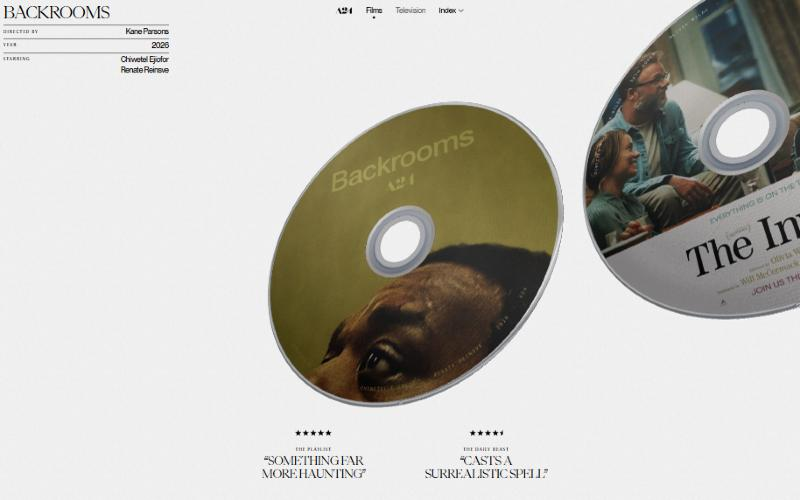
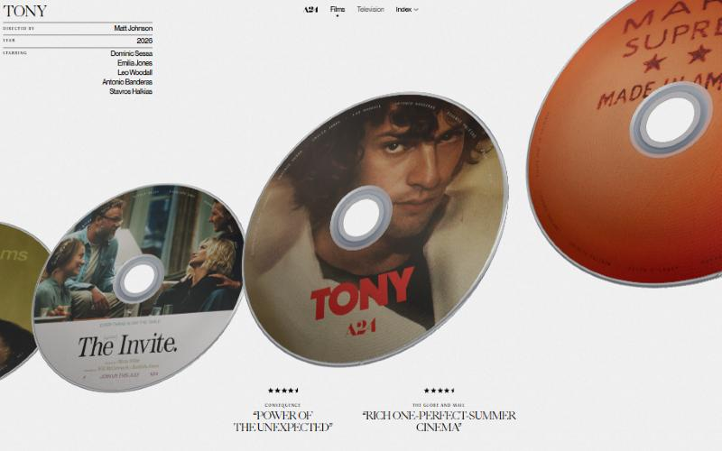
01 · A24 Films (conceito) — Ravi Klaassens · prêmio DesignRush out/2026
O disco e a ficha técnica
- O objeto é enorme, inclinado em 3D e cortado pela borda da tela; o próximo da fila espia na direita, puxando o scroll.
- No canto, título serifado + tabela com fios finos: rótulo minúsculo e espaçado à esquerda, valor à direita.
- Embaixo, citações em duas colunas com estrelas, em caixa-alta serifada.
- Fundo papel off-white com grão; toda a cor vem do objeto.
usado em A · ficha técnica
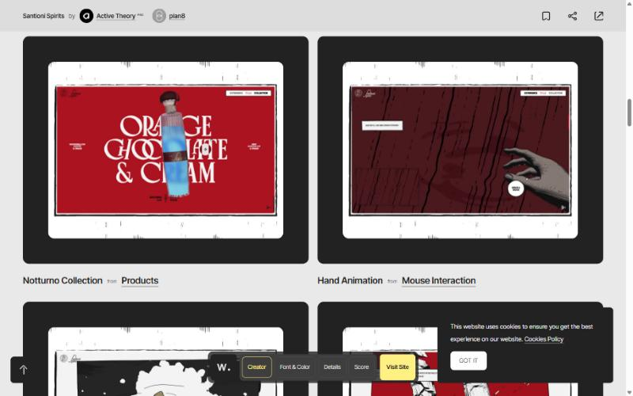
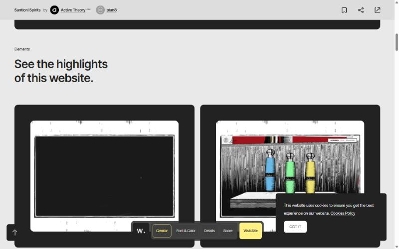
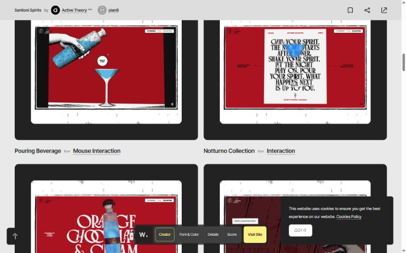
02 · Santioni Spirits — Active Theory + plan8 · Awwwards Site of the Day (5/10/2026)
O objeto na frente da palavra
- A garrafa fica na frente de uma tipografia gigante (o nome do sabor): a palavra é o fundo, o objeto a interrompe.
- Microtexto simétrico nos dois lados do objeto, na linha do meio.
- Moldura em volta da página inteira, como uma página impressa.
- As garrafas são apresentadas num palco/pedestal com cortina; uma mão ilustrada interage com o mouse.
- Um campo de cor forte (vermelho) com preto e branco gravado.
O site em si abre com uma verificação de idade; os prints são da página dele na Awwwards.
usado em B · cartaz
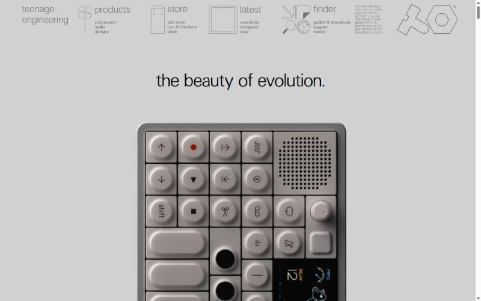
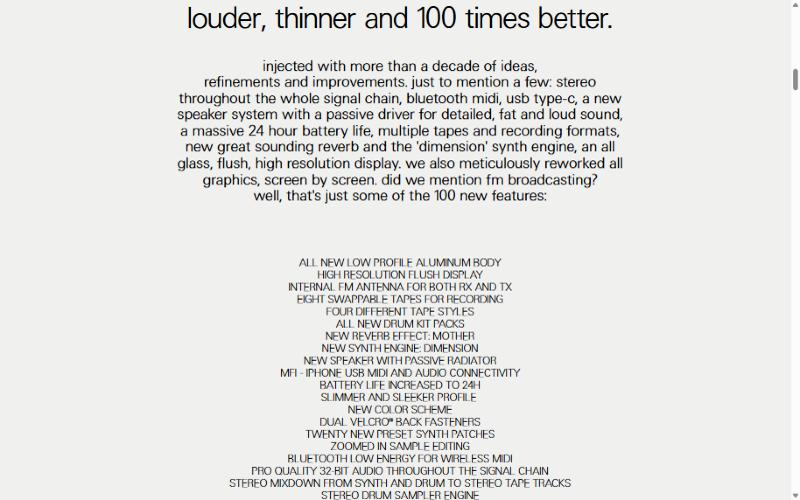
03 · Teenage Engineering — OP–1 field
A escala e a lista
- O produto em escala enorme sobre cinza neutro, com uma frase só.
- Navegação feita de pequenas ilustrações técnicas em traço fino com legenda minúscula.
- As "100 novidades" viram uma lista centralizada em caixa-alta que funciona como textura.
usado em A · ficha técnica
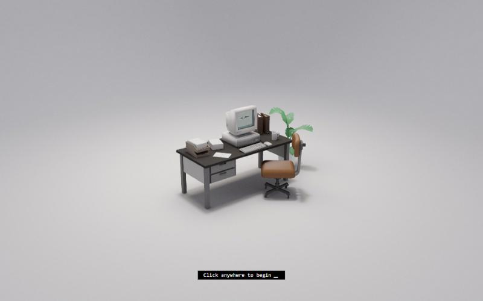
04 · Henry Heffernan — portfolio
O habitat do PC
- O PC não está sozinho: mesa, cadeira, planta, pastas, caneca e papéis formam um diorama pequeno num estúdio infinito claro, com sombra macia.
- Um prompt de terminal embaixo convida a entrar.
- A câmera depois entra na tela, onde há um sistema funcionando (o mesmo caminho da nossa transição, ao contrário).
usado em C · mesa
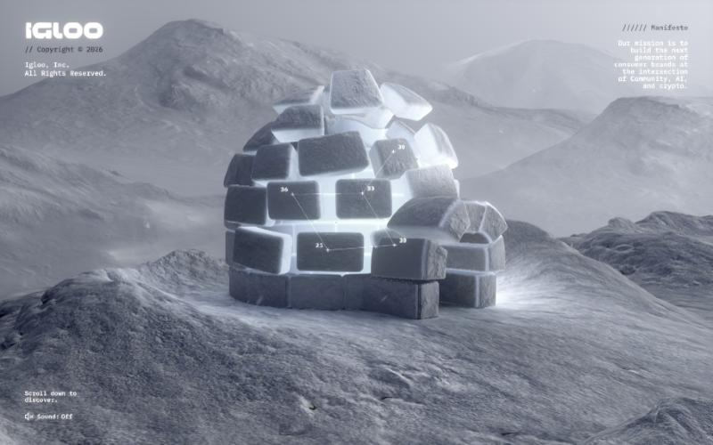
05 · Igloo Inc. — Awwwards Site of the Year 2024
Cantos e constelação
- Texto preso aos quatro cantos, em mono pequeno: marca, manifesto, convite para rolar, som.
- Pontos numerados ligados por linhas finas sobre o objeto: lê como dado, não como decoração.
- O objeto vive num ambiente (relevo de neve) com a mesma paleta fria.
usado em A · ficha técnica
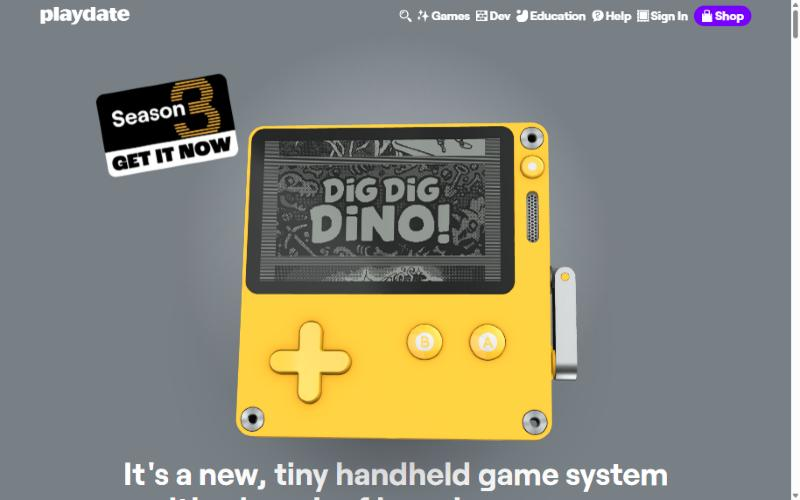
06 · Playdate — Panic
Um adesivo basta
- Um adesivo grande colado torto no canto do aparelho, com sombra: personalidade com um elemento só.
- A tela do aparelho mostra conteúdo de verdade, não uma imagem genérica.
usado em B · cartaz
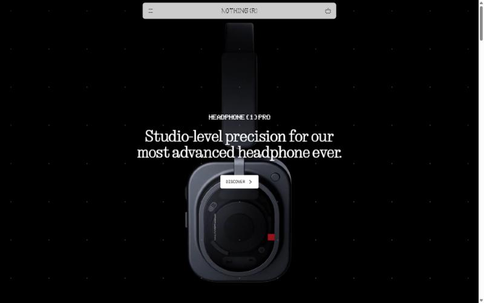
07 · Nothing
Pontos e um vermelho
- Fundo escuro com grade de pontos (a mesma linguagem da nossa seção 6) e o nome em matriz de pontos.
- O título serifado passa por cima do produto.
- Um único quadrado vermelho no produto: o vermelho como pontuação.
usado na sala escura de A, B e C
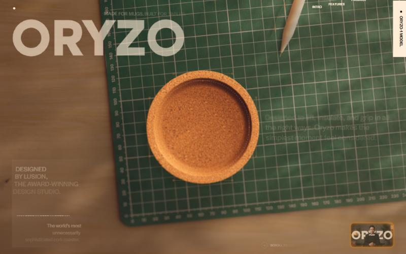
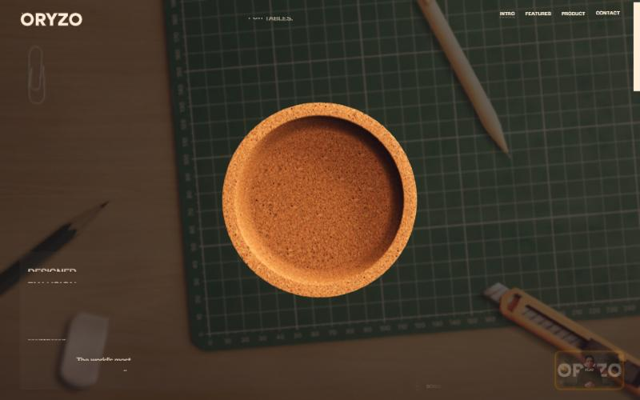
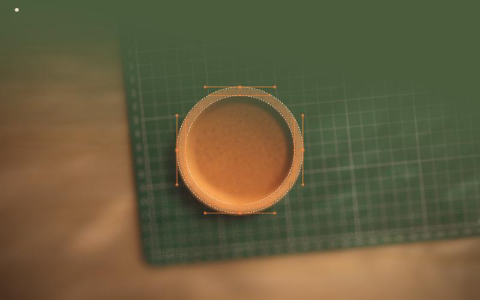
08 · Oryzo — Lusion
A mesa vista de cima
- O produto (um porta-copos de cortiça) fica no meio de uma base de corte, vista de cima, numa mesa de madeira com lápis, estilete, clipe e borracha: o habitat de quem desenha.
- A grade da base é a régua da página: números nas bordas, linhas finas; o texto corre por cima dela.
- No scroll a mesa desfoca, a base se aproxima e o objeto ganha cotas de desenho técnico: o cenário vira a página.
usado em D · cartaz + mesa (a base de corte e a vista de cima)
oryzo.ai · designrush · landing.love
Técnica da câmera no scroll: Codrops · Brad Woods